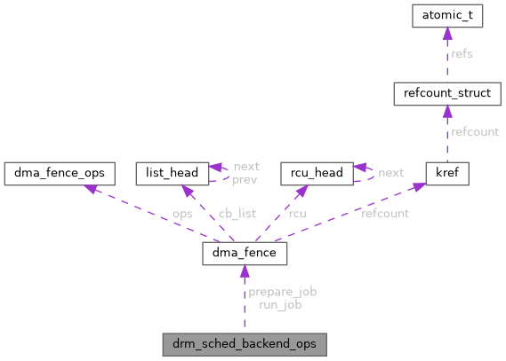

|
XenevaOS
|
#include <gpu_scheduler.h>

Public Attributes | |
| struct dma_fence *(* | prepare_job )(struct drm_sched_job *sched_job, struct drm_sched_entity *s_entity) |
| struct dma_fence *(* | run_job )(struct drm_sched_job *sched_job) |
| enum drm_gpu_sched_stat(* | timedout_job )(struct drm_sched_job *sched_job) |
| void(* | free_job )(struct drm_sched_job *sched_job) |
| void(* | cancel_job )(struct drm_sched_job *sched_job) |
struct drm_sched_backend_ops - Define the backend operations called by the scheduler
These functions should be implemented in the driver side.
| void(* drm_sched_backend_ops::cancel_job) (struct drm_sched_job *sched_job) |
@cancel_job: Used by the scheduler to guarantee remaining jobs' fences get signaled in drm_sched_fini().
Used by the scheduler to cancel all jobs that have not been executed with &struct drm_sched_backend_ops.run_job by the time drm_sched_fini() gets invoked.
Drivers need to signal the passed job's hardware fence with an appropriate error code (e.g., -ECANCELED) in this callback. They must not free the job.
The scheduler will only call this callback once it stopped calling all other callbacks forever, with the exception of &struct drm_sched_backend_ops.free_job.
| void(* drm_sched_backend_ops::free_job) (struct drm_sched_job *sched_job) |
@free_job: Called once the job's finished fence has been signaled and it's time to clean it up.
| struct dma_fence *(* drm_sched_backend_ops::prepare_job) (struct drm_sched_job *sched_job, struct drm_sched_entity *s_entity) |
@prepare_job:
Called when the scheduler is considering scheduling this job next, to get another struct dma_fence for this job to block on. Once it returns NULL, run_job() may be called.
Can be NULL if no additional preparation to the dependencies are necessary. Skipped when jobs are killed instead of run.
| struct dma_fence *(* drm_sched_backend_ops::run_job) (struct drm_sched_job *sched_job) |
@run_job: Called to execute the job once all of the dependencies have been resolved.
@sched_job: the job to run
The deprecated drm_sched_resubmit_jobs() (called by &struct drm_sched_backend_ops.timedout_job) can invoke this again with the same parameters. Using this is discouraged because it violates dma_fence rules, notably dma_fence_init() has to be called on already initialized fences for a second time. Moreover, this is dangerous because attempts to allocate memory might deadlock with memory management code waiting for the reset to complete.
TODO: Document what drivers should do / use instead.
This method is called in a workqueue context - either from the submit_wq the driver passed through drm_sched_init(), or, if the driver passed NULL, a separate, ordered workqueue the scheduler allocated.
Note that the scheduler expects to 'inherit' its own reference to this fence from the callback. It does not invoke an extra dma_fence_get() on it. Consequently, this callback must take a reference for the scheduler, and additional ones for the driver's respective needs.
Return:
| enum drm_gpu_sched_stat(* drm_sched_backend_ops::timedout_job) (struct drm_sched_job *sched_job) |
@timedout_job: Called when a job has taken too long to execute, to trigger GPU recovery.
@sched_job: The job that has timed out
Drivers typically issue a reset to recover from GPU hangs. This procedure looks very different depending on whether a firmware or a hardware scheduler is being used.
For a FIRMWARE SCHEDULER, each ring has one scheduler, and each scheduler has one entity. Hence, the steps taken typically look as follows:
For a HARDWARE SCHEDULER, a scheduler instance schedules jobs from one or more entities to one ring. This implies that all entities associated with the affected scheduler cannot be torn down, because this would effectively also affect innocent userspace processes which did not submit faulty jobs (for example).
Consequently, the procedure to recover with a hardware scheduler should look like this:
Note that some GPUs have distinct hardware queues but need to reset the GPU globally, which requires extra synchronization between the timeout handlers of different schedulers. One way to achieve this synchronization is to create an ordered workqueue (using alloc_ordered_workqueue()) at the driver level, and pass this queue as drm_sched_init()'s @timeout_wq parameter. This will guarantee that timeout handlers are executed sequentially.
Return: The scheduler's status, defined by &enum drm_gpu_sched_stat